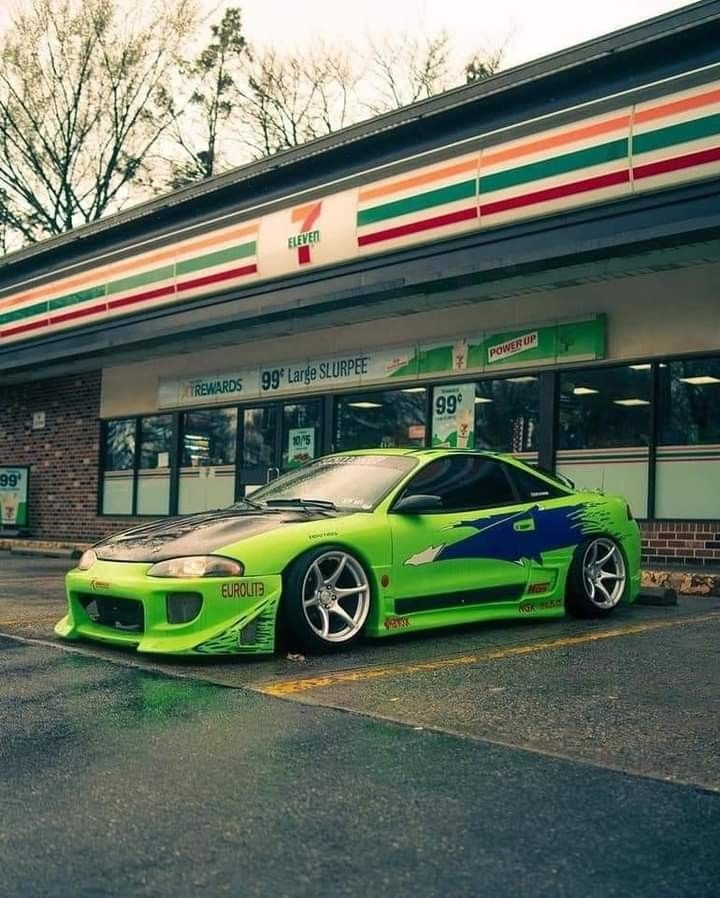
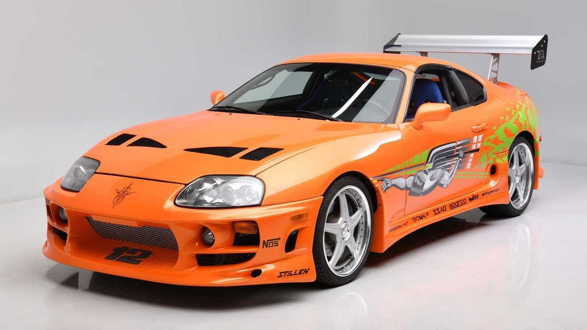
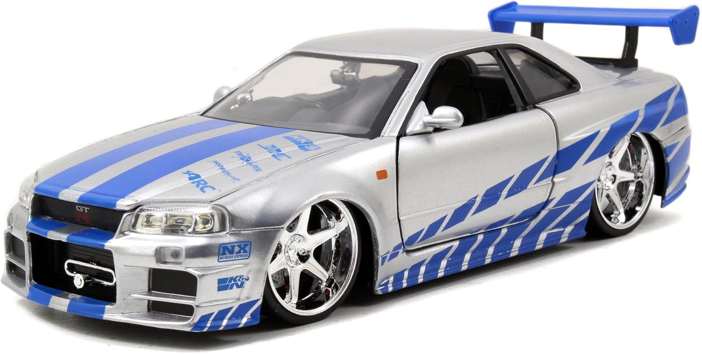

Mi pasión por los carros deportivos
Escogí hablar de carros porque es algo que me apasiona mucho. Desde pequeño a mi me gustan mucho los carros y me encantan por las películas y caricaturas por ejemplo el rayo mcqueen y rápido y furiosos. El primer carro que me gusto fue el mitsubishi eclipse que es un carro muy icónico de rápido y furiosos 1, ese es el primer carro de la saga y me gustaba mucho por los colores y forma ya que es de color verde brillante y capa de fibra de carbono, tiene un motor de 1.5L turboalimento de 4 cilindros con inyección directa a los pistones que genera 163 caballos de fuerza aproximadamente y con 250 Niutons metros de torque. Después de el eclipse comenzó a gustarme el toyota supra MK4 de 1998 este carro era un adelantado a su época, ya que poseía una gran aerodinámica para su fecha de lanzamiento y también tiene uno de los motores mas codiciados del mundo el famoso 2JZ, ya que al ser un motor de hierro forjado es casi indestructible, alcanza la cantidad de 382 caballos de fuerza completamente stock sin ninguna modificación, ya con modificación ay carros de este tipo que an llegado a alcanzar los 3,000 caballos de fuerza, super increíble para un carro de “baja calidad” pero es una bestia sobre ruedas y por eso fue uno de mis favoritos. Este carro fue mi favorito durante mas o menos 7 años, asta que llego “el carro de mis sueños” un carro que fue temido en las carreras alemanas siendo un carro japonés, este carro fue la competencia de Toyota supra durante mucho tiempo asta que este carro lo sobrepaso por creces. Este carro domino japón en la década de los 2000’s y ya que fue, es y será una bestia con su motor RB26DETT con un bloque de 2.6L y de 6 cilindros en línea, con 24 válvulas y doble turbocompresor el famoso “Twin Turbo o TT”. Del carro de cual estoy hablando es el famoso Nissan Skyline GTR r34 de 1999 este carro es mi favorito desde ace unos 3 años y me gusta este carro porque lo manejó uno de mis actores favoritos que es Paul Walker que sale en las películas rápidos y furiosos, también este carro me gusta porque tiene una gran capacidad de tuneo y tiene una gran estética y con un White body es uno de los mejores carros del mundo para mi. Para los coleccionistas es un gran tesoro ya que es muy codiciado. En las carreras este carro fue conocido como Godzilla ya que en las carreras era de color azul, de 10 campeonatos este nissan gano 8 y por eso su apodo. Y pues esta es mi historia de porque me gustan tanto los carros y solo ago la invitación a las demas personas a que se metan a el mundo de los carros ya que es un mundo muy interesante y bonito.


